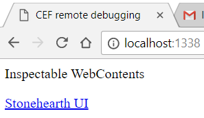
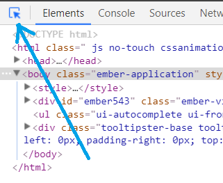
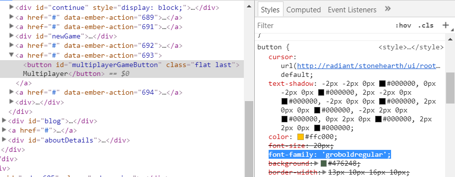

Translations for the game can be provided as mods. We can also provide translations for mods from other players.
- The startermod_locale mod
- How it works
- How to translate en.json
- Translating proper nouns
- How to change the fonts of the game
- Enabling localization in your mod
The startermod_locale mod
To make a fan translation of the stonehearth mod or of any other mod, we can use the startermod_locale mod as a template.
If you create the translation mod through the Create New Mod button in the Mods menu, make sure to tick the "Is this a translation mod?" checkbox so that the mod gets properly tagged as "client_only". Otherwise, make sure this property is set to true in the "info" section of your manifest.
Download startermod_locale from Github. Unzip it into the "mods" folder and make sure the folder is called startermod_locale and that it has the correct structure so that it can be loaded without conflicts.
Inside the startermod_locale folder, you should see a manifest.json file, a added_languages.json file and a translations folder which has 2 folders in it representing the two mods that existed at the moment this mod was created (stonehearth and rayyas_children). Inside each of those folders there will be 2 files named en-XA.json and en-DEV.json.
The startermod_locale mod adds a pseudolocalization of stonehearth's and rayya children's en.json files. The en-DEV.json file is the plain english used to generate en-XA.json. Pseudolocalization replaces all the characters in stonehearth's en.json file with characters that have accents. This mimics what foreign languages will look like when displayed in the game.
When you start up Stonehearth with this mod installed, open the Settings menu and go to the System tab. You will see that a language named "[!!Ēņģľĭšħ!!]" and a language named "English(Dev)" will be added to the list of languages. Select the "[!!Ēņģľĭšħ!!]" language and click "OK" to see how it changes the game's language.
Any untranslated strings will appear in the original language (English).
How it works
The startermod_locale's manifest.json has a mixinto for supported_languages.json:
"mixintos" : {
"stonehearth/locales/supported_languages.json" : "file(added_languages.json)"
}
This causes all the data in added_languages.json to be added to the list of supported languages recognized by the stonehearth mod.
added_languages.json specifies two new languages, en-XA and en-DEV like so:
{
"languages": {
"en-XA": {
"display_name": "[!!Ēņģľĭšħ!!]"
},
"en-DEV": {
"display_name": "English(Dev)"
}
}
}
The value for "display_name" is what the settings language dropdown will show for the name of the language. You can use this to display the name of a language in its native form.
The name ("en-XA") is the language code of the translation (see: http://www.science.co.il/Language/Locale-codes.asp). Most languages and language variants have a language code. In this case, "en" means English and the "XA" is a made up name for the pseudolocale. The German translation will be de-DE.json, and the Chinese Mandarin translation will be zh-CN.json.
 If you have a region specific translation, the last 2 letters of the translation file's name MUST be capitalized!
If you have a region specific translation, the last 2 letters of the translation file's name MUST be capitalized!
Then, back to startermod_locale's manifest.json, we add the translations provided by this mod using overrides:
"overrides": {
"stonehearth/locales/en-XA.json": "file(translations/stonehearth/en-XA.json)",
"stonehearth/locales/en-DEV.json": "file(translations/stonehearth/en-DEV.json)",
"rayyas_children/locales/en-XA.json": "file(translations/rayyas_children/en-XA.json)",
"rayyas_children/locales/en-DEV.json": "file(translations/rayyas_children/en-DEV.json)"
}
These overrides will act as if you added new files under the stonehearth/locales/ and rayyas_children/locales/ directories.
The files that are pointed to are the en-XA.json / en-DEV.json files under the translations folder. These are the files that contain all the translated strings.
For your translation mod, copy the "en.json" from stonehearth/locales, the examples provided with this example mod don't contain all the strings from the latest version of the game. Copy the en.json from the rayyas_children and northern_alliance mods too, and from any other mod you wish to translate.
How to translate en.json
Only translate strings that come after a colon (':') in the JSON file. You can more easily view the JSON on a website such as http://codebeautify.org/jsonviewer, using text editors with syntax highlighting, or using translation tools like community member thk's Json Translate Helper.
Do not modify the strings that come on the left side of a ':'. Also, do not modify strings that are surrounded by brackets ('[' or ']').
Example:
...
"ai": {
"actions": {
"status_text": {
"chase_entity": "chasing [name(data.target)]",
...
Here, the string that needs to be translated is "chasing [name(data.target)]".
DO NOT translate the "[name(data.target)]" portion. This is a special string replacement.
The name of the target will replace "[name(data.target)]" in the game (if a hearthling is chasing a goblin named "Jib", the game will replace "[name(data.target)]" with "Jib" and the final string will read: "chasing Jib").
The replacement is character sensitive, so do not change whether the string is upper or lower case, and do not replace any of the string with a different key. It is best to copy and paste the special portion into your translated text.
You can, however, move "[name(data.target)]" around to different locations within the string.
For example, the japanese translated file might show something like this:
...
"ai": {
"actions": {
"status_text": {
"chase_entity": "[name(data.target)]を追う",
...
The Chinese file might look like:
...
"ai": {
"actions": {
"status_text": {
"chase_entity": "追逐[name(data.target)]",
...
Translating proper nouns
The names for hearthlings, monsters and towns are not stored in the en.json file. If you wish to translate those too, you can add mixintos to the files under stonehearth/services/server/population/data. See here for a full example.
How to change the font of the game
Some languages have characters that one or more of the default fonts from the game don't support. If you want to change them, do the following in your translation mod:
Find the font that you want to change. To do this:
- With the game open and showing the UI piece that uses that font, type
localhost:1338in your browser, and click on "Stonehearth UI".  - Then activate the "Inspect element" button and go back to the game. 
- Click on the text that has the concerning font and go back to the browser. In the 'Style' tab you should find the name of the font in one of the CSS styles (font-family property). 
- With the game open and showing the UI piece that uses that font, type
The fonts of the game can be found in
stonehearth/ui/root/css/fonts. Once you find the folder corresponding to the font you want to change, check which formats does it use (woff, ttf, eot, svg...). You can use an online tool like this one to convert fonts[1], if you're missing a file for a specific format.Override the fonts: copy your new fonts into your mod and create overrides in your manifest for each of the font files you want to replace (.woff, .ttf, .eot, .svg).
Alternatively, if you have your own @font-face defined in a stylesheet, you can override only the variables.less file, which is inside
stonehearth/ui/root/css. Add an import for your font (make sure the path for your font is absolute):@import "/my_translation/ui/root/css/fonts/my_font/stylesheet.css";and change any of the typography variables to point to your imported font.
Optionally override any other .less file if you see that the translated text overflows the UI, or you want to change the font size, etc.
Remember that overriding .less files will not be compatible with other mods that also override the same files.Your new fonts will be applied even when the player hasn't chosen your language in the System settings, as long as your translation mod is enabled.
Enabling localization in your mod
If you are creating your own content mod that has translatable strings (not a mod that is purely translation), you need to specify a "default_locale" in the mod's manifest.json in order to tell the game that your mod contains locale data:
{
"info" : {
"name" : "rayyas_children",
"namespace" : "rayyas_children",
"version" : 3
},
"default_locale": "en"
}
This tells the game that if the main stonehearth game is running in a language for which your mod doesn't have support, it will know to load the english translation file by default.
If a localization path doesn't exist in your en.json file because you spelled it wrong somewhere, it will display in the game as is ("i18n(my_namespace:my_broken_item.my_display_name)"). More on localization here.
References
[1]: From https://discourse.stonehearth.net/t/first-steps-for-translation/21077